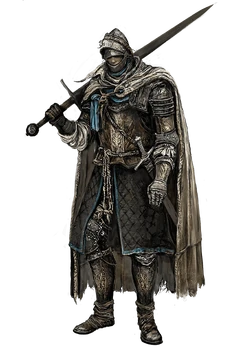
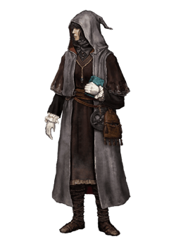
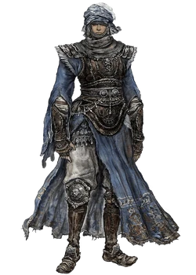
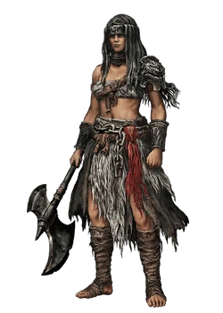

About Classes
In Elden Ring, classes are the foundation upon which every character is built, defining not only your starting stats and equipment but also shaping the way you experience the world from the very first steps. Each class offers a distinct combination of attributes such as Strength, Dexterity, Intelligence, Faith, Endurance, and Mind, which directly affect how you perform in combat, how resilient you are to damage, and how effective your magical or physical abilities will be. Your starting equipment further reinforces your initial path—some classes wield heavy swords or axes, making them natural frontline fighters; others begin with nimble weapons or ranged tools, allowing for a faster, more tactical style of play; and certain classes start with staves or sacred seals, giving them early access to powerful sorceries and incantations. While your class sets the tone for your early journey, Elden Ring’s expansive and flexible progression system allows for immense customization. Players can develop their characters in any direction, blending melee, ranged, and magical skills to create hybrid builds or specialize entirely in one discipline. Beyond the mechanics, choosing a class also shapes your approach to exploration, encounters, and survival in a world filled with deadly enemies and formidable bosses. Some classes make the opening areas more manageable, while others provide challenges that require skill, strategy, and careful planning. Ultimately, selecting a class is both a practical and strategic decision—it gives you a starting advantage, frames your early experience, and helps define your personal playstyle, yet it does not limit your potential. As you journey through the Lands Between, your choice of class will become the lens through which you approach combat, exploration, and the intricate web of tactics, lore, and survival that defines Elden Ring.